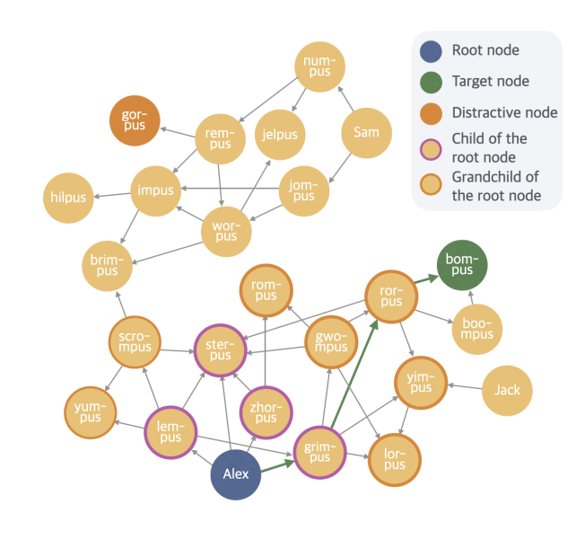
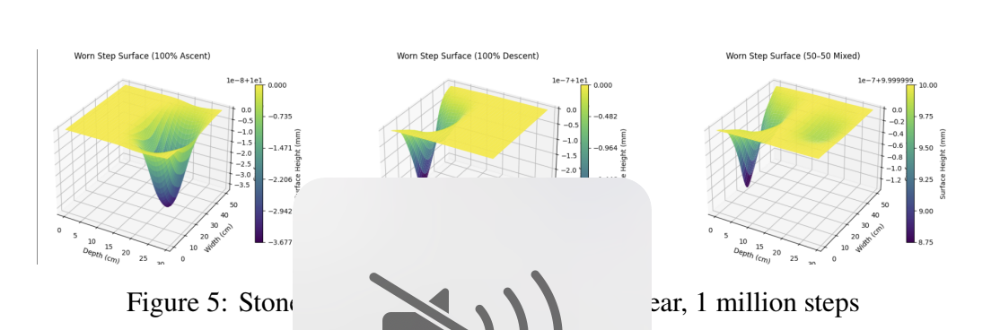

Lumara
AI-powered platform democratizing access to verified mentorship across all domains of learning.


Latent Reasoning Research
Developing novel benchmarks and test-time scaling techniques for enhanced LLM reasoning.
History Through Stairways
Framework combining stochastic wear equations and differential systems for archaeological research.
Stock Buyback Optimization
Optimized trading execution using genetic algorithms and geometric Brownian motion simulations.
Asteroid Projections
Advanced trajectory forecasting system for predicting and analyzing potential asteroid paths.
Market Dashboard
Real-time financial market analytics platform with ML-powered predictive insights.